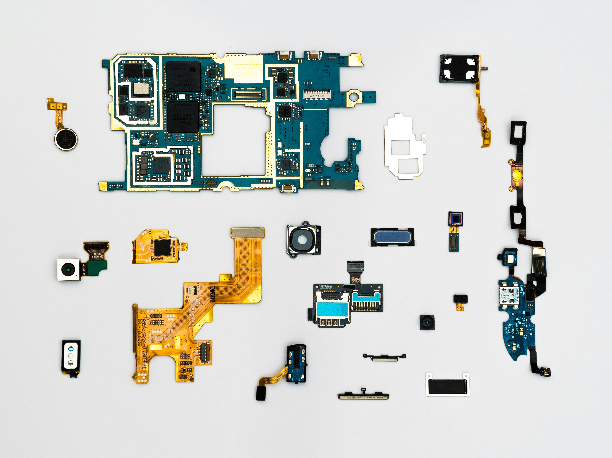
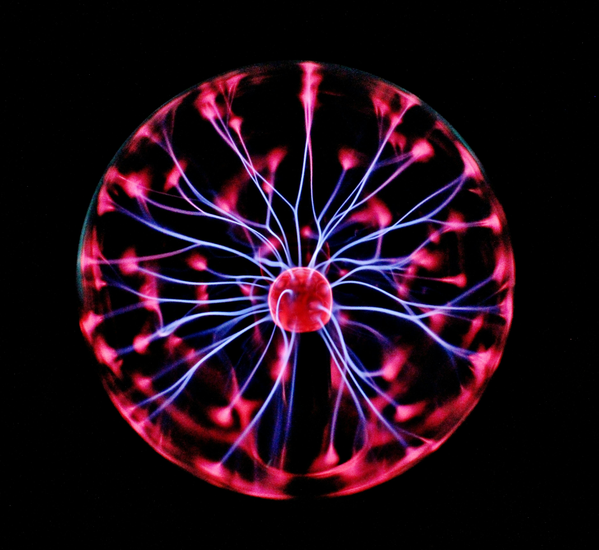

Hi! I am Muhammad Abdul Rafay
I build practical machine learning systems — recommendation engines, prediction models and NLP tools — with Python and scikit-learn. I have completed three ML internships and shipped live, working projects.
I began my BS in Artificial Intelligence at Air University, Islamabad — where my journey into programming and problem-solving started.
Python became my main tool. With NumPy and Pandas, I learned to turn raw, messy data into clear insight.
I trained my first models with scikit-learn — prediction, classification and recommendation systems that actually work.
Three ML internships later, I ship real projects — including a live Netflix recommender demo anyone can try.
Recommender, content-type prediction (91.9%) and clustering on 8,790 titles.
View on GitHub →
Handwritten character recognition with SVM — 97.5% accuracy.
View on GitHub →
Random Forest credit-risk scoring — 75% accuracy, F1 0.83.
View on GitHub →Reading books on technology, science and ideas that spark new thinking.
Cycling around Islamabad to stay active, focused and energised.
Capturing moments and scenes through a lens, one frame at a time.